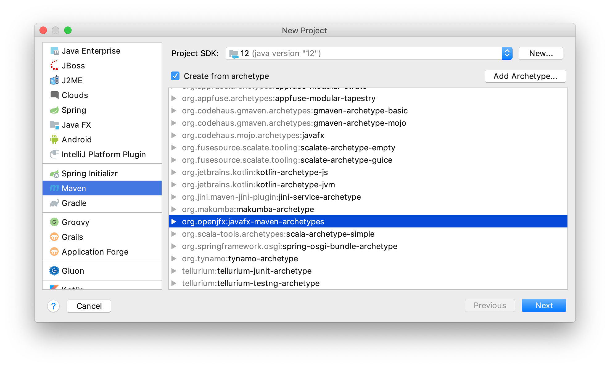
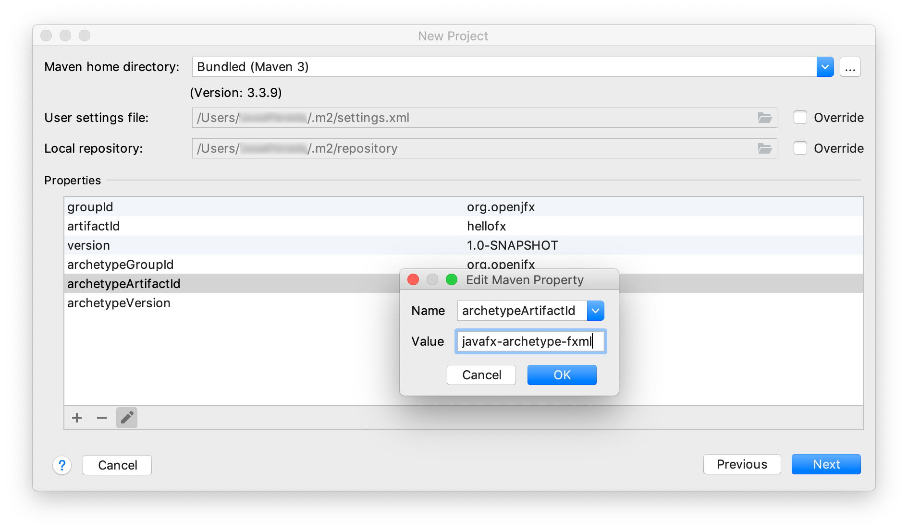
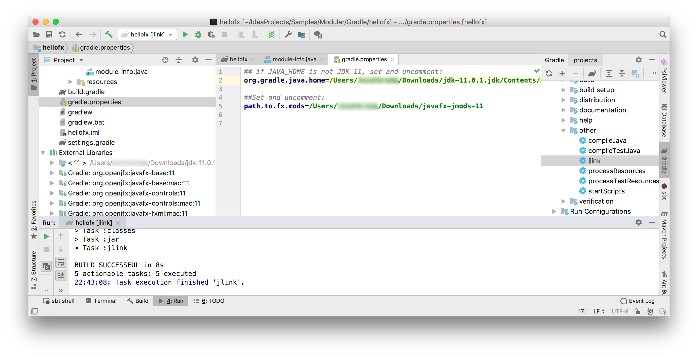

Provide a name to the project, like HelloFX, and a location.
When the project opens, the JavaFX classes are not recognized.
Provide a name to the project, like HelloFX, and a location.
When the project opens, the JavaFX classes are not recognized.

This section explains how to use Java 11 and JavaFX 11 from IntelliJ. Version IntelliJ IDEA 2018.2.5 was used for the following screenshots.
Download an appropriate JDK 11 for your operating system. Make sure JAVA_HOME is properly set to the Java 11 installation directory.
You can create a JavaFX 11 modular or non-modular project and use the IDE tools, Maven or Gradle build tools.
Follow these steps to create a JavaFX non-modular project and use the IDE tools to build it and run it. Alternatively, you can download a similar project from here.
Download the appropriate JavaFX SDK for your operating system and unzip it to a desired location, for instance /Users/your-user/Downloads/javafx-sdk-11.
Provide a name to the project, like HelloFX, and a location.
When the project opens, the JavaFX classes are not recognized.
Go to File -> Project Structure -> Project, and set the project SDK to 11. You can also set the language level to 11.

Go to File -> Project Structure -> Libraries and add the JavaFX 11 SDK as a library to the project.
Point to the lib folder of the JavaFX SDK.
 Once the library is applied, the JavaFX classes will be recognized by the IDE.
Once the library is applied, the JavaFX classes will be recognized by the IDE.

Error: JavaFX runtime components are missing, and are required to run this application
To solve the issue, click on Run -> Edit Configurations... and add these VM options:
--module-path /path/to/javafx-sdk-11/lib --add-modules=javafx.controls,javafx.fxml
--module-path "\path\to\javafx-sdk-11\lib" --add-modules=javafx.controls,javafx.fxml
Note that the default project created by IntelliJ uses FXML, so javafx.fxml
is required along with javafx.controls. If your project uses other modules,
you will need to add them as well.
 Click apply and close the dialog.
Click apply and close the dialog.
Alternatively, you can define a global variable that can be used in future projects. Go to
Preferences (File -> Settings) -> Appearance & Behavior -> Path Variables, and define the name
of the variable as PATH_TO_FX, and browse to the lib folder of the JavaFX SDK to set its value,
and click apply.

Then you can refer to this global variable when setting the VM options as:
--module-path ${PATH_TO_FX} --add-modules=javafx.controls,javafx.fxml
Click Run -> Run... to run the project, now it should work fine.
Follow these steps to create a JavaFX non-modular project and use the Maven tools to build it and run it. Alternatively, you can download a similar project from here.
If you select the org.codehous.mojo.archetypes:javafx archetype, the latest version is from 2015,
so it will rely on the old jfxrt.jar. But you can modify the pom based on this
one later on.
 Provide the groupId, like org.openjfx, the artifactId, like hellofx.
Then provide a name to the project, like HelloFX and a location for the project.
When the project opens, after you synchronize the project, the JavaFX classes are not recognized.
Provide the groupId, like org.openjfx, the artifactId, like hellofx.
Then provide a name to the project, like HelloFX and a location for the project.
When the project opens, after you synchronize the project, the JavaFX classes are not recognized.

Replace the existing plugins based on this pom file, and set the mainClass accordingly to org.openjfx.MainApp.
Add the required dependencies for javafx.controls and javafx.fxml.

Import the changes. The JavaFX classes will be recognized. Notice also that Maven manages
the required dependencies: it will add javafx.base and
javafx.graphics that are required by javafx.controls and javafx.fxml,
but most important, it will add the required classifier based on your platform, downloading
the specific platform jars.
 As for any other maven dependencies, these jars can be found in the local .m2 repository.
As for any other maven dependencies, these jars can be found in the local .m2 repository.
You can open the Maven Projects window and click on HelloFX->Plugins->compiler->compiler:compile to
compile the project, and on HelloFX->Plugins->exec->exec:java to execute the project.

You can also open a terminal and run mvn compile exec:java to run the project.
Follow these steps to create a JavaFX non-modular project and use the Gradle tools to build it and run it. Alternatively, you can download a similar project from here.
Create a Gradle project with Java.
 Provide the groupId, like org.openjfx, the artifactId, like hellofx.
Select the Gradle JVM based on the project JDK 11.
Then provide a name to the project, like HelloFX and a location for the project.
When the project opens, add a package org.openjfx and an empty MainApp class.
Provide the groupId, like org.openjfx, the artifactId, like hellofx.
Select the Gradle JVM based on the project JDK 11.
Then provide a name to the project, like HelloFX and a location for the project.
When the project opens, add a package org.openjfx and an empty MainApp class.

Edit the build.gradle file and replace it with this build file, setting the mainClassName accordingly to org.openjfx.MainApp.
Similar to Maven, we can declare the required JavaFX modules in the build.gradle file. However, for Gradle we need to apply the JavaFX gradle plugin:
javafx {
modules = [ 'javafx.controls', 'javafx.fxml' ]
}
Synchronize the project and you will get the JavaFX dependencies.
 As for any other Gradle dependencies, these jars can be found in the local .gradle repository.
As for any other Gradle dependencies, these jars can be found in the local .gradle repository.
Based on this MainApp class,
add its content to the project main class. Then add the controller
and the FXML and
and the css
files.
Note that the JavaFX classes are recognized by the IDE.

You can open the Gradle window and click on hellofx->Tasks->build->build to
build the project, and on hellofx->Tasks->application->run to execute the project.

You can also open a terminal and run:
./gradlew run
gradlew run
Download the appropriate JavaFX jmods for your operating system and unzip it to a desired location, for instance /Users/your-user/Downloads/javafx-jmods-11.
Follow these steps to create a JavaFX modular project and use the IDE tools to build it and run it. Alternatively, you can download a similar project from here.
Provide a name to the project, like HelloFX, and a location. When the project opens, rename the hellofx package to org.openjfx.
Go to File -> Project Structure -> Project, and set the project SDK to 11.
You can also set the language level to 11 and change the default compiler output directory
out to mods.

Go to File -> Project Structure -> Libraries and add the JavaFX 11 SDK as a library to the project. Point to the lib folder of the JavaFX SDK.
Add the module-info class, including the required modules javafx.controls and javafx.fxml.
Since FXML uses reflection to access the controller in the module, this has to be opened to javafx.fxml. Finally,
export the package org.openjfx.

Based on this MainApp class,
add its content to the project main class. Then add the controller
and the FXML and
and the css
files.

Click on Run -> Edit Configurations... and add these VM options:
--module-path $PATH_TO_FX:mods/production
--module-path "%PATH_TO_FX%;mods\production"
 Click apply and close the dialog.
Click apply and close the dialog.
Click Run -> Run... to run the project.
To create a runtime image, run the following commands:
export PATH_TO_FX_MODS=path/to/javafx-jmods-11
$JAVA_HOME/bin/jlink --module-path $PATH_TO_FX_MODS:mods/production --add-modules=hellofx --output jre
jre/bin/java -m hellofx/org.openjfx.MainApp
set PATH_TO_FX_MODS="path\to\javafx-jmods-11"
jlink --module-path "%PATH_TO_FX_MODS%;mods\production" --add-modules=hellofx --output jre
jre\bin\java -m hellofx/org.openjfx.MainApp
Follow these steps to create a JavaFX modular project and use the Maven tools to build it and run it. Alternatively, you can download a similar project from here.
Select the org.codehous.mojo.archetypes:javafx archetype, and modify the pom based on this one later on. Provide the groupId, like org.openjfx, the artifactId, like hellofx. Then provide a name to the project, like HelloFX and a location for the project.
Replace the existing plugins based on this pom file, and set the mainClass accordingly to org.openjfx.MainApp. Add the required dependencies for javafx.controls and javafx.fxml.
Add the module-info class, including the required modules javafx.controls and javafx.fxml. Since FXML uses reflection to access the controller in the module, this has to be opened to javafx.fxml. Finally, export the package org.openjfx. 
Based on this MainApp class, add its content to the project main class. Then add the controller and the FXML and and the css files. 
You can open the Maven Projects window and click on HelloFX->Plugins->compiler->compiler:compile to compile the project, and on HelloFX->Plugins->exec->exec:java to execute the project. You can also open a terminal and run mvn clean compile package exec:java to run the project.
To create a runtime image, run the following commands:
export PATH_TO_FX_MODS=path/to/javafx-jmods-11
$JAVA_HOME/bin/jlink --module-path $PATH_TO_FX_MODS:target/hellofx-1.0-SNAPSHOT.jar --add-modules=hellofx --output jre
jre/bin/java -m hellofx/org.openjfx.MainApp
set PATH_TO_FX_MODS="path\to\javafx-jmods-11"
jlink --module-path "%PATH_TO_FX_MODS%;target\hellofx-1.0-SNAPSHOT.jar" --add-modules=hellofx --output jre
jre\bin\java -m hellofx/org.openjfx.MainApp
Follow these steps to create a JavaFX modular project and use the Gradle tools to build it and run it. Alternatively, you can download a similar project from here.
Create a Gradle project with Java. Provide the groupId, like org.openjfx, the artifactId, like hellofx. Select the Gradle JVM based on the project JDK 11. Then provide a name to the project, like HelloFX and a location for the project. When the project opens, add a package org.openjfx and an empty MainApp class.
Edit the build.gradle file and replace it with this build file, setting the mainClassName accordingly to org.openjfx.MainApp.
Note the use of the org.openjfx.javafxplugin plugin, that removes the necessity of adding the
JavaFX dependencies and setting the module-path for the compile and run task for them.

Add the module-info class, including the required modules javafx.controls and javafx.fxml.
Since FXML uses reflection to access the controller in the module, this has to be opened to javafx.fxml. Finally,
export the package org.openjfx.

Based on this MainApp class, add its content to the project main class. Then add the controller and the FXML and and the css files.
You can open the Gradle window and click on hellofx->Tasks->build->build to build the project, and on hellofx->Tasks->application->run to execute the project. You can also open a terminal and run:
./gradlew run
gradlew run
To create a runtime image, set the org.gradle.java.home and path.to.fx.mods properties in the local gradle.properties file.  Then run hellofx->Tasks -> other -> jlink task to create the image. To run the image:
build/hellofx/bin/java -m hellofx/org.openjfx.MainApp
build\hellofx\bin\java -m hellofx/org.openjfx.MainApp